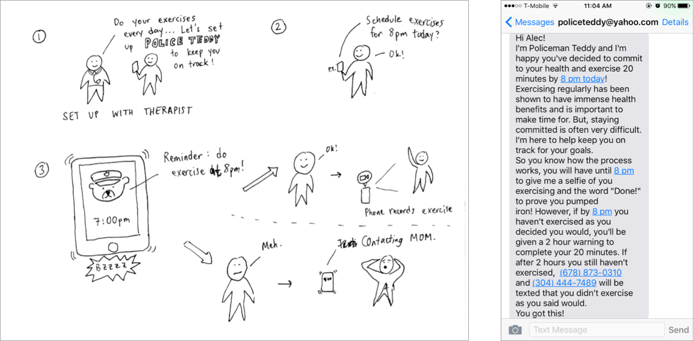
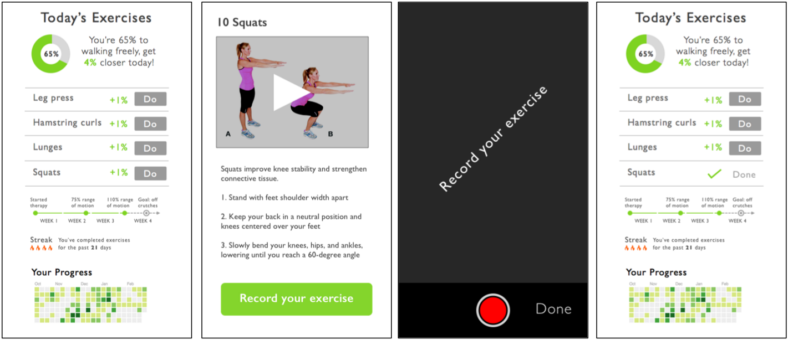
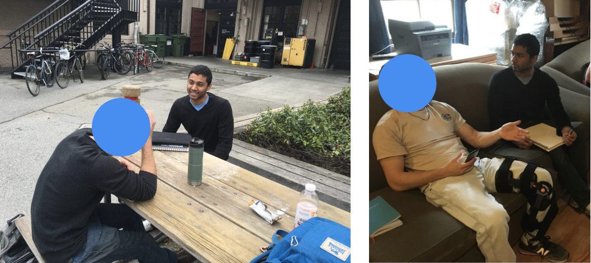
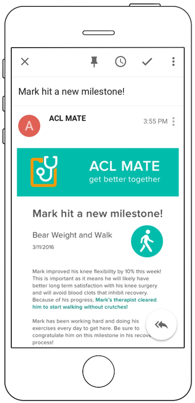

After a physical injury, the road to recovery can be long and daunting. The physical and emotional stress involved in recovery contributes to patient non-compliance rates of up to 65% for at-home therapy prescribed by physical therapists.
ACL MATE is a mobile app that helps people through recovery after ACL surgery, leveraging behavioral design techniques to improve compliance.
I prototyped ACL MATE in a team of three as part of a seven-week project for CS247, a Stanford class on human-computer interaction and design. In this project, my group followed a user-centered design process, leading from needfinding into brainstorming and parallel experience prototypes, and ending with a medium-fidelity prototype.
We spoke with two patients at Stanford hospital about physical therapy and recovery, and they told us about how their close friends and family keep them motivated to stay healthy.
We also spoke with two physical therapy professionals who work within Stanford Athletics as well as outside Stanford. We were struck by the multifaceted secondary roles that these therapists play in caring for patients: in addition to diagnosing injuries and prescribing treatments, they act as motivators, educators, and counselors. One interviewee told us he draws from the Kübler-Ross model of the stages of grief to understand the psychology of injured student-athletes! Physical therapy compliance depends on the patients emotions and motivation.
In the carrot vs. stick dichotomy, our early ideas aligned with the stick. One idea that followed from our needfinding was to use social accountability to friends and family as a motivator: i.e. a system that reminds the patient to do at-home physical therapy and notifies her friends if she doesn't. However, from testing and feedback we realized patients who are already under the stress of injury need reinforcement that's positive, not negative.
Until this point in the process, we had been interested in physical therapy generally. Going forward, we decided to focus on a specific injury in order to generate more specific insights and more compelling solutions.
We spoke with three patients who had gone through ACL injury and recovery. They told us about how they stayed motivated by setting goals for themselves and seeking solidarity — with other injured friends or in online forums. We summarized our findings into two salient needs.
In these interviews, we also learned about the timelines and benchmarks involved in recovery from ACL injury.
We explored the idea of progress-tracking and protoyped ways to gamify physical therapy, either by showing progress in exciting ways or by offering rewards such as coupons on health-related items, possibly paid for by insurance companies.
We created a quick prototype (shown above) using Sketch and Marvel, and we tested on two users who had gone through ACL recovery. From feedback, we learned that the progress-tracking metrics were not as interesting to users as the simple exercises list and exercise form video. Measuring progress was more nuanced than we thought, and we realized that over-gamifying the recovery progress could distract users and undermine the intrinsic motivation to get better.
In our final prototype, we simplified the progress-tracking metrics and, after revisiting our needfinding insights, expanded upon ways to help patients feel less alone in their recovery. Users might have two yet-untapped sources of social support who could be recruited as "allies".
We envisioned that patients could choose "allies", people who they want to be involved in their recovery. Allies would receive infrequent email updates when the patient hits milestones with information on what the milestones mean and why they are important.
We built our final medium-fidelity prototype using Sketch for designing graphics and Swift for iOS development. Of the 26 projects presented and judged in our class's demo day, my team's project was judged at 2nd place. Our demo video and poster are below.
Given more time, I would have conducted another round of user testing to get feedback on our final prototype. I have unanswered questions about how potential allies and physical therapists would react to the ACL MATE, since (1) the app relies on their involvement, and (2) we only tested prototypes on people who were once patients for ACL injury.
Though it was valuable in our design process for us to focus on a specific injury, I wonder how well the idea behind ACL MATE would generalize to other injuries. We selected ACL injury as our focus because one of our first interviewees happened to have gone through it. It would have been interesting to talk to patients with other injuries in order to (1) broaden the design space for more potential insights, and (2) learn whether ACL MATE's features would generalize to other injuries.